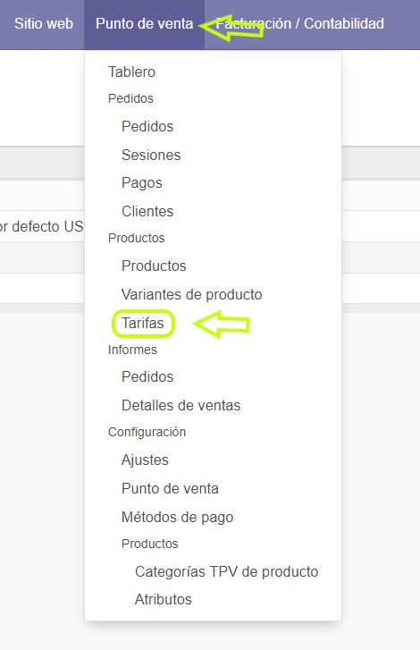
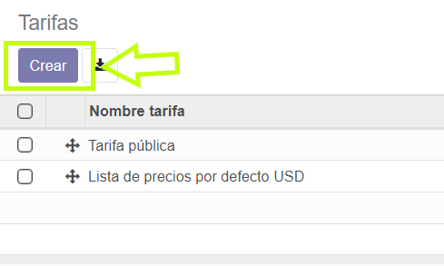
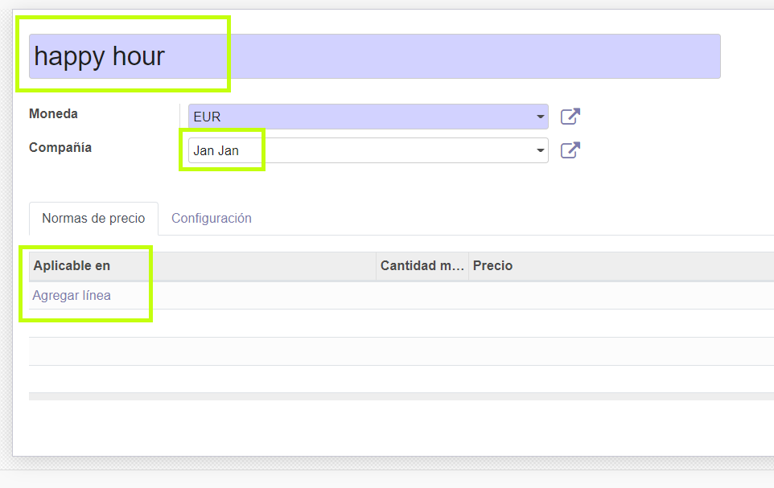
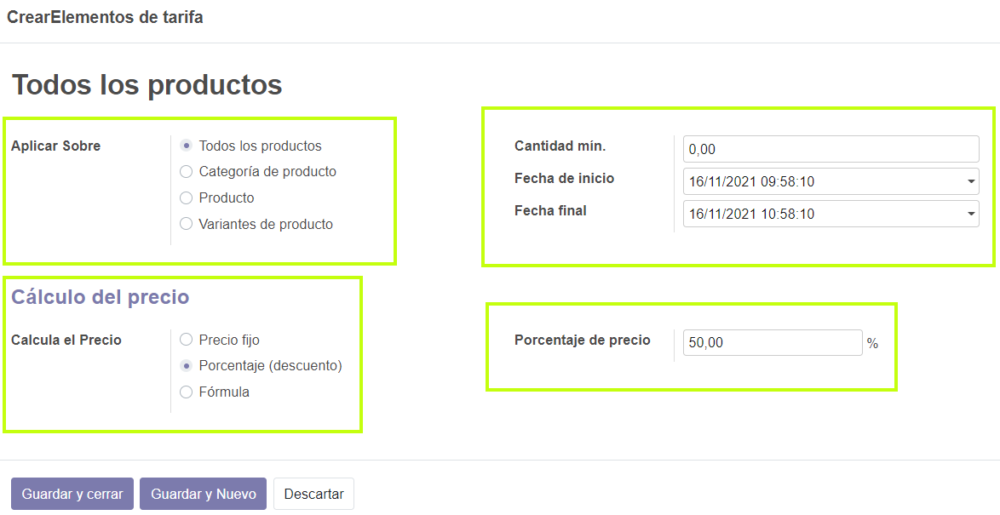

Para configurar happy hour manualmente lo primero será entrar a tarifas dentro de punto de venta

Una vez entremos a tarifas tendremos que crear una nueva

En nombre pondremos happy hour, seleccionamos la compañía (en este caso Jan Jan) y clicamos en agregar línea

Aquí tendremos que configurar varios apartados:
- El primero es aplicar sobre todos los productos, y en la parte de la derecha indicaremos el día y la hora de inicio y final
- En precio pondremos porcentaje y en la parte de la derecha indicaremos el descuento que queremos poner en todos los productos
- PARA TERMINAR GUARDAMOS
